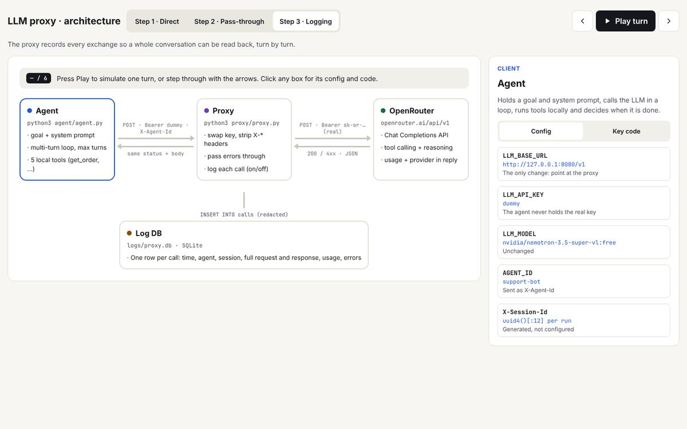

An agent calling OpenRouter
What it adds
An agent is a loop: send the conversation and a list of tools to the LLM, run whatever tool it asks for, append the result, repeat until it answers in plain text.
- OpenAI-compatible client pointed at OpenRouter, free model
nvidia/nemotron-3.5-super-vl:free. - Tools are JSON schemas;
finish_reason=tool_callskeeps the loop going,stopends it. - The agent holds the real API key. That is the problem the next lesson fixes.
Code
agent/agent.py · page docs/lessons/01-agent-to-openrouter.md

flowchart LR U[Goal] --> A[Agent loop] A -- messages + tools --> L[(OpenRouter)] L -- tool_calls --> A A --> T[current_time / calculator] T -- result --> A L -- stop --> F[Final answer]